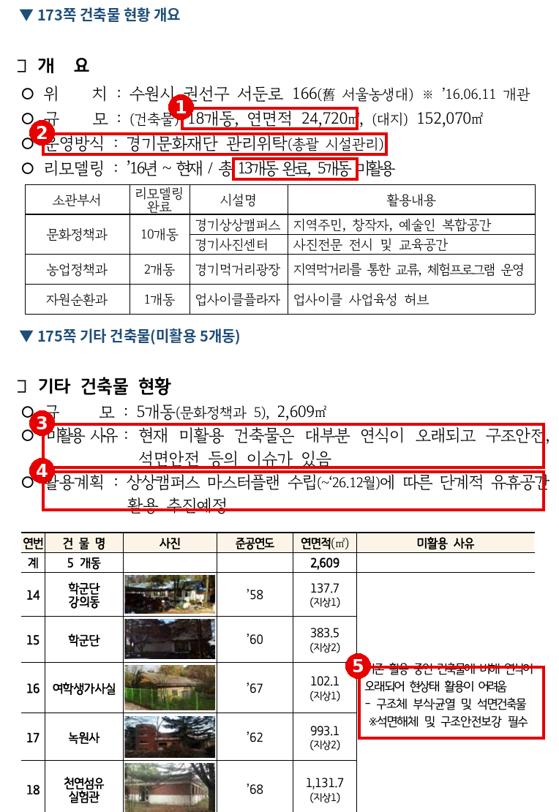
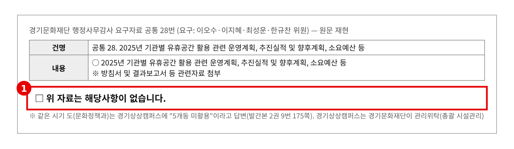
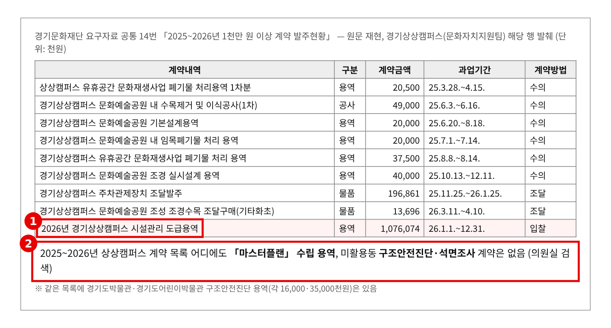
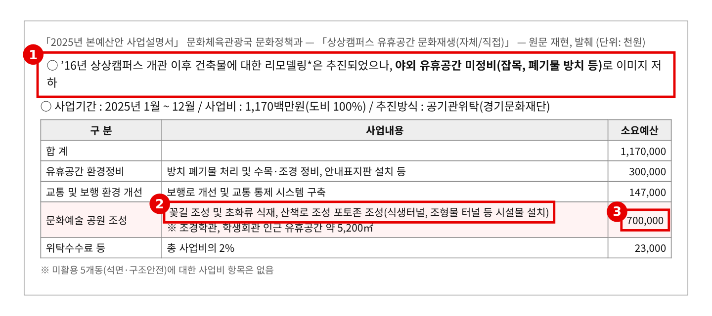
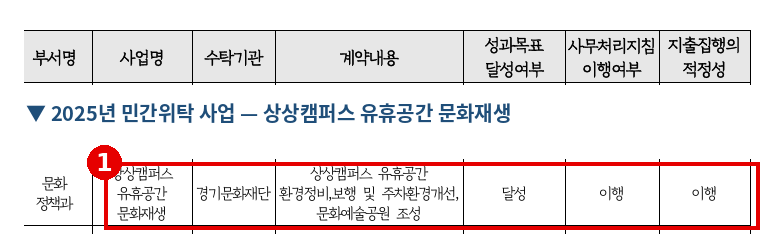
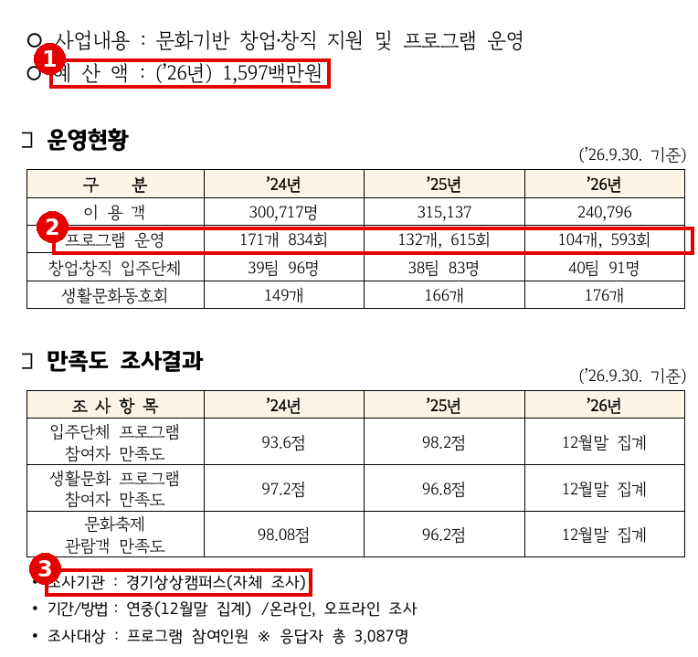
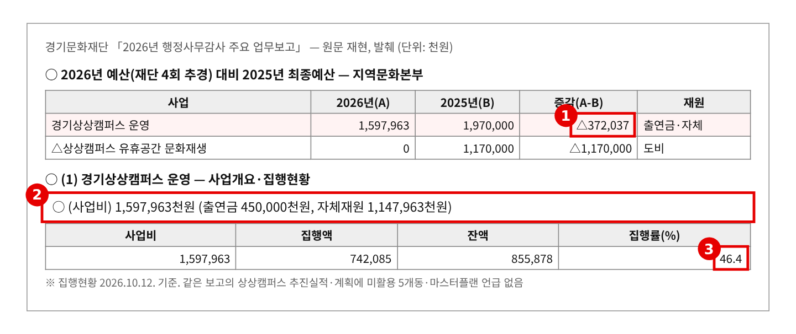
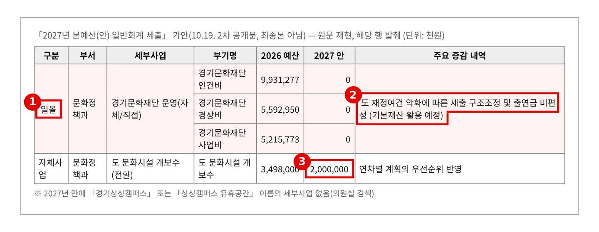

2026년 행정사무감사 질의서 (발언용 · 5분) — 기관 1일차
경기상상캠퍼스, 5개동은 10년째 비어 있다
— 석면 건물은 그대로, 11억은 꽃길로, 내년 예산은 0원
문화체육관광위원회 황은화 위원 → 경기문화재단 대표이사(문화자치지원팀)
| ① 10년째 그대로인 5개동 | 18개동 중 5개동(2,609㎡) 개관 이후 미활용 — "구조체 부식·균열 및 석면건축물" → 활용계획은 "마스터플랜(~’26.12.)"뿐. 재단 계약 목록에 마스터플랜·안전진단 용역 없음 |
| ② 11억은 꽃길로 | 2025년 도비 11.7억 「상상캠퍼스 유휴공간 문화재생」 — 꽃길·포토존·조형물 터널 7억 → 미활용 건물에는 0원. 그런데 위탁 성과평가는 “달성”, 재단은 유휴공간 “해당사항 없음” |
| ③ 운영도 줄고, 내년은 0원 | 프로그램 171개 → 132개 → 104개, 만족도 93~98점은 자체 조사 → 2027 예산안 재단 출연금 전액 미편성. 마스터플랜이 나와도 실행할 돈이 없다 |
※ 의원실 메모 (발언 제외) · 발간본 2권 9번은 최성운·한규찬 위원과 공동, 10번은 황은화 위원 단독 요구다. 공통 28번(유휴공간)은 이오수·이지혜·최성운·한규찬 위원 요구라 "해당사항 없음"을 먼저 짚을 수 있다. 이 질의는 미활용동 안전·마스터플랜 실체·재원에 무게를 둔다. · 마스터플랜은 도(문화정책과)가 발주했을 수도 있다. "재단 계약 목록에 없다"까지만 말하고, 발주 주체를 묻는다. · 2026년 1차 특정감사(상상캠퍼스 마스터키 관리)는 공직기강 질의서에서 다룬다. 여기서는 꺼내지 않는다. · 2027년 예산은 10.19. 공개 가안 기준이다. 상상캠퍼스 운영비는 재단 출연금·자체재원 안에 있어 별도 세부사업이 없다. |
※ 발언 중 [근거 n] 표시는 맨 뒤 「근거자료」 번호입니다.
■ 발언 — 도입
대표이사님, 경기상상캠퍼스에 대해 묻겠습니다.
옛 서울대 농생대 자리에 2016년 6월 문을 열었습니다. 올해가 개관 10주년입니다. 건물은 18개동입니다. 13개동은 고쳐서 쓰고 있고, 5개동, 2,609㎡는 10년째 비어 있습니다. 재단이 도에서 관리를 위탁받아 시설 전체를 관리합니다. [근거 1]
이 5개동을 어떻게 관리해 왔는지, 돈은 어디에 썼는지, 앞으로 무엇으로 할지 묻겠습니다.
▶ 질문 1. 10년째 그대로인 5개동
학군단 강의동, 학군단, 여학생가사실, 녹원사, 천연섬유실험관입니다. 1958년부터 1968년 사이에 지은 건물입니다. 미활용 사유는 "구조체 부식·균열 및 석면건축물, 석면해체 및 구조안전보강 필수"입니다. [근거 1]
활용계획은 한 줄입니다. "상상캠퍼스 마스터플랜 수립(~’26.12월)에 따른 단계적 추진." 12월까지 두 달 남았습니다. [근거 1]
그런데 재단이 낸 1천만 원 이상 계약 목록에는 마스터플랜 용역이 없습니다. 미활용동의 구조안전진단이나 석면조사도 없습니다. 같은 기간 경기도박물관과 어린이박물관은 구조안전진단을 했습니다. [근거 3]
게다가 재단은 「유휴공간 활용 계획」 요구자료에 "해당사항 없음"이라고 답했습니다. 상상캠퍼스에는 해마다 30만 명이 옵니다. 석면 건물 옆으로 축제가 열리고 가족 방문객이 지나갑니다. [근거 2]
대표이사님, 이 5개동은 재단이 관리하는 유휴공간이 아닙니까? 마스터플랜은 누가, 언제, 얼마로 만들고 있습니까?
▷ "마스터플랜은 도(문화정책과)가 수립하는 것이다"
→ 현장을 관리하는 것은 재단입니다. 재단이 마스터플랜에 낸 의견과 기초자료가 무엇인지 제출해 주십시오. "해당사항 없음" 답변은 정정해 주십시오. [근거 2]
▷ "미활용동은 출입을 통제하고 있어 안전에 문제가 없다"
→ 그렇다면 통제 방식과 점검 기록이 있어야 합니다. 동별 안전점검 기록, 석면 관리 현황을 감사 기간 안에 제출해 주십시오. 10년 동안 진단 한 번 없었다면 그것은 관리가 아니라 방치입니다.
▶ 질문 2. 유휴공간 예산 11억, 건물에는 0원
2025년 도비 11억 7천만 원이 「상상캠퍼스 유휴공간 문화재생」으로 재단에 위탁됐습니다. 내역을 보면 폐기물 처리와 수목 정비 3억, 보행로 1억 4,700만 원, 그리고 문화예술공원 7억 원입니다. 꽃길, 초화류, 포토존, 조형물 터널입니다. [근거 4]
비어 있는 5개동에 쓴 돈은 0원입니다. 계약 목록을 보면 수목 제거, 기본설계, 임목폐기물, 실시설계, 조경수목 구매가 이어집니다. 대부분 수의계약입니다. [근거 3]
그런데 이 사업의 위탁 성과평가는 "달성"입니다. 목표가 꽃길이었으니 달성입니다. 10년 된 숙제는 그대로입니다. [근거 5]
유휴 ‘건물’은 그대로 두고 유휴 ‘공간’에 꽃길을 낸 이유가 무엇입니까? 석면 건물 옆에 공원을 만들면서 안전 검토는 했습니까?
▷ "야외 정비가 시급했고, 건물은 예산이 커서 단계적으로 하려 했다"
→ 단계의 첫걸음은 진단입니다. 구조안전진단 비용은 박물관 사례로 보면 수천만 원입니다. 11억 원 가운데 진단비조차 넣지 않았다면 단계적 계획이 아닙니다. [근거 3] [근거 4]
▷ "도가 정한 사업계획대로 수행했다"
→ 수탁기관도 현장의 우선순위를 말할 수 있어야 합니다. 성과평가 "달성"의 기준과 평가표를 제출해 주십시오. 꽃길의 성과로 5개동 문제가 가려져서는 안 됩니다. [근거 5]
▶ 질문 3. 운영도 줄고, 내년 예산은 0원
운영도 보겠습니다. 프로그램은 2024년 171개, 834회에서 2025년 132개, 올해 9월까지 104개, 593회입니다. 만족도는 93점에서 98점인데, 조사기관은 "경기상상캠퍼스(자체 조사)"입니다. 스스로 매긴 점수입니다. [근거 6]
올해 사업비는 15억 9,796만 원으로 작년보다 3억 7천만 원 줄었습니다. 그중 출연금은 4억 5천만 원, 나머지 11억 5천만 원은 자체재원입니다. 10월 12일 현재 집행률은 46.4%입니다. [근거 7]
그리고 2027년 예산안 가안에서 재단 출연금은 인건비·경상비·사업비 전액 미편성입니다. "기본재산 활용 예정"입니다. 상상캠퍼스 이름이 붙은 사업은 없습니다. 도 문화시설 개보수 예산도 35억 원에서 20억 원으로 줄었습니다. 12월에 마스터플랜이 나와도 실행할 돈이 없습니다. [근거 8]
대표이사님, 2027년 상상캠퍼스 운영비와 5개동 정비비는 어디서 나옵니까? 마스터플랜 1단계는 언제 시작합니까?
▷ "기본재산을 활용해 운영은 유지하겠다"
→ 기본재산은 한 번 쓰면 끝입니다. 운영비를 메우기도 빠듯한데 석면 해체와 구조 보강은 무엇으로 합니까? 연차별 재원계획을 마스터플랜과 함께 내 주십시오. [근거 8]
▷ "만족도가 높아 운영 성과는 충분하다"
→ 자체 조사로는 판단할 수 없습니다. 프로그램은 3년 새 40% 가까이 줄었습니다. 외부 기관 조사를 도입하고, 이용객 산정 방법도 함께 밝혀 주십시오. [근거 6]
■ 마무리 · 요구사항
대표이사님, 상상캠퍼스는 버려진 대학을 도민의 공간으로 되살린 곳입니다. 그 10년의 성과는 분명합니다. 그러나 다섯 개 건물은 10년째 석면과 균열을 안고 서 있고, 그 옆에 꽃길이 났습니다. 다음 10년의 첫 과제는 이 건물들을 안전하게 정리하는 것입니다. 현장에서 끝까지 챙기겠습니다.
하나, 미활용 5개동의 동별 안전점검·구조안전진단·석면조사 결과와 출입통제 현황을 감사 종료 전까지 제출해 주십시오. 진단 기록이 없다면 구조안전진단·석면조사 실시 계획을 2026년 12월까지 보고해 주십시오.
둘, 상상캠퍼스 마스터플랜의 발주 주체·용역 계약서·중간보고를 감사 종료 전까지 제출하고, 5개동별 활용·철거 방향과 연차별 재원계획을 담은 결과를 2027년 3월까지 상임위원회에 보고해 주십시오. 공통 28번 「해당사항 없음」 답변도 정정해 주십시오.
셋, 2027년 상상캠퍼스 운영 재원 계획(기본재산·자체수입 구분)과 외부 만족도 조사 도입 방안을 2027년 본예산 상임위 심사 전까지 보고해 주십시오.
■ 참고 · 감사 중 추가 요구자료
· 상상캠퍼스 마스터플랜 용역 계약서·과업지시서·중간보고서(도 발주인 경우 도 자료)
· 미활용 5개동 동별 안전점검 기록, 석면 조사·관리대장, 출입통제 방식
· 2025년 「상상캠퍼스 유휴공간 문화재생」 정산서·결과보고서와 민간위탁 성과평가표
· 2016~2026년 상상캠퍼스 연도별 리모델링 실적(동별 사업비)과 미활용동 검토 이력
· 상상캠퍼스 이용객 산정 방법과 만족도 조사 설문지·응답 분포
근 거 자 료
빨간 상자·번호는 발언에서 짚는 부분입니다. 발간본은 원문 캡처이고, "원문 재현"은 한글·마크다운·엑셀 원문을 그대로 옮긴 것입니다.
▶ 질문 1 관련
근거 1. 경기상상캠퍼스 건축물 현황 — 18개동 중 5개동 미활용 
※ 출처: 문화체육관광국 행정사무감사 1차 요구자료(발간본 2권) 9번 「경기상상캠퍼스 운영 및 공간조성(예정) 현황」(문화정책과) 173·175쪽 |
근거 2. 재단 답변 — 유휴공간 활용 "해당사항 없음" 
※ 출처: 경기문화재단 2026년 행정사무감사 요구자료 공통 28번 「2025년 기관별 유휴공간 활용 관련 운영계획, 추진실적 및 향후계획, 소요예산 등」 (원문 재현) |
근거 3. 재단 1천만 원 이상 계약 — 상상캠퍼스 해당분 
※ 출처: 경기문화재단 2026년 행정사무감사 요구자료 공통 14번 「2025~2026년 용역, 학술, 행사 등 1천만 원 이상 계약 발주현황」(요구: 이오수·김승기·안시현·이지혜·전예슬·최규진 위원) (원문 재현, 경기상상캠퍼스 해당 행 발췌) |
▶ 질문 2 관련
근거 4. 2025년 「상상캠퍼스 유휴공간 문화재생」 1,170,000천원 산출내역 
※ 출처: 「2025년 본예산안 사업설명서」 문화체육관광국 문화정책과 「상상캠퍼스 유휴공간 문화재생(자체/직접)」 (원문 재현, 발췌) |
근거 5. 2025년 민간위탁 성과평가 — 상상캠퍼스 유휴공간 문화재생 "달성" 
※ 출처: 문화체육관광국 행정사무감사 1차 요구자료(발간본 2권) 4번 「2024~2026년 민간위탁사업 성과평가 및 지도·점검 결과」(문화정책과) 129쪽 |
▶ 질문 3 관련
근거 6. 경기상상캠퍼스 운영현황 · 만족도 
※ 출처: 문화체육관광국 행정사무감사 1차 요구자료(발간본 2권) 10번 「최근 3년간 경기상상캠퍼스 운영 현황」(황은화 위원 요구) 177쪽 |
근거 7. 2026년 상상캠퍼스 사업비 · 재원 · 집행률 
※ 출처: 경기문화재단 「2026년 행정사무감사 주요 업무보고」 사업비 현황 및 「(1) 경기상상캠퍼스 운영」 (원문 재현, 발췌) |
근거 8. 2027년 본예산(안) — 재단 출연금 전액 미편성 
※ 출처: 「2027년 본예산(안) 일반회계 세출」 가안(10.19. 2차 공개분, 최종본 아님) (원문 재현, 발췌) |